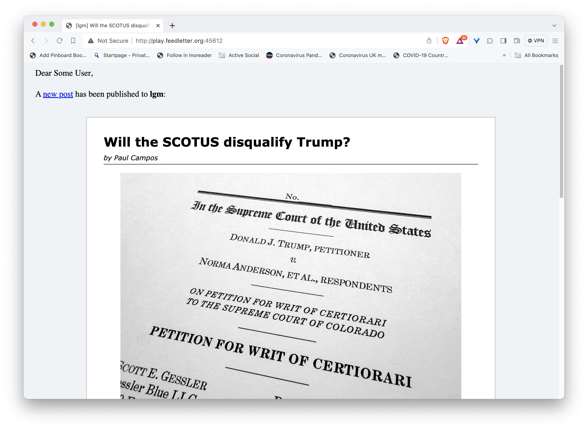
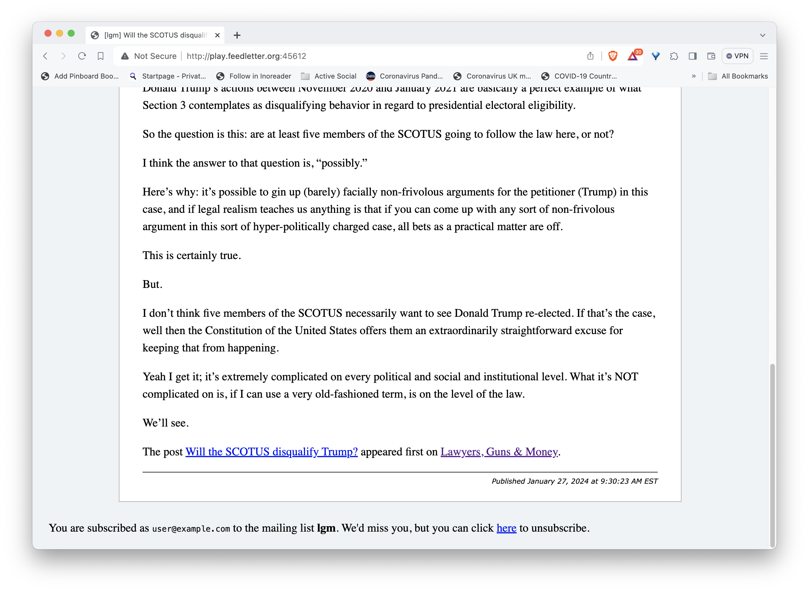
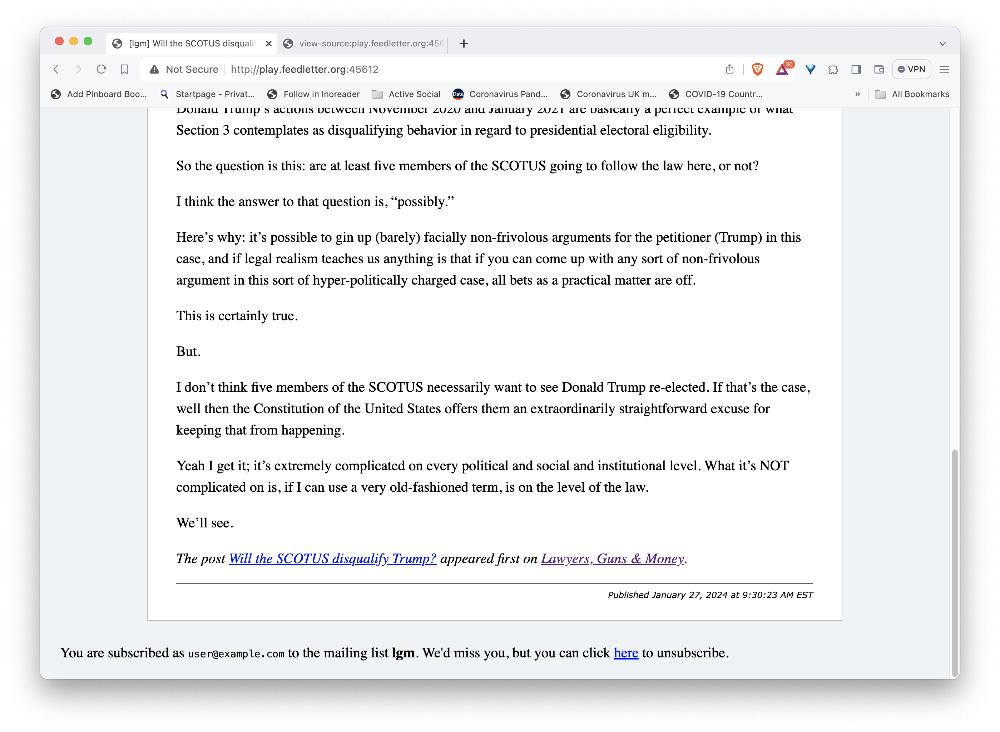

I've been working for some time on a service to turn RSS feeds into e-mail newsletters, which I've called feedletter.
The service watches any number of RSS feeds, can host a variety of subscription types for each feed, including one e-mail per article, daily or weekly digests, compendia of every n posts, etc. It can also notify other services, like Mastodon, of new posts. It lets you define, for each feed, a notion of when an item is stable and finalized, and takes great care never to e-mail or notify the same item more than once.
Here I want to go through the process of setting up a feedletter instance, configuring it, tweaking or customizing the newsletter style, and running it.
You can host feedletter on any Linux/UNIX-ish server. For completeness, I'm going to set up a server from scratch, from a fresh Digital Ocean droplet. But of course you can run feedletter along side other services on an existing machine, and skip a lot of these steps. feedletter's main prerequisite is postgres, but we'll make use of nginx, certbot, systemd etc. as we go along.
Much of the code and config we develop will be memorialized in this github repo.
Let's go!
Table of contents
- Set up a server with a DNS name
- Download dependencies
- Create user feedletter
- Install feedletter
- Prepare the postgres database
- Set up
feedletter-secrets.properties
- Get an https certificate
- Configure
nginx to forward to the API
- Initialize the feedletter database
- Perform in-database configuration
- Add feeds to watch
- Define "subscribables" to feeds
- Enable feedletter as a
systemd daemon
- Let users subscribe to your subscribables!
- Tweak the newsletter styles
- Advanced: Customize the content
- Conclusion
1. Set up a server with a DNS name
We launch a "droplet" from Digital Ocean. You can use whatever Linux flavor you like. We'll pick the latest Ubuntu.

And we go ahead and give it a name.

2. Download dependencies
We login as root to our new droplet (however we've configured that), and download a bunch of stuff we'll need:
# apt install postgresql
# apt install openjdk-17-jre-headless
# apt install nginx
# apt install certbot
# apt install emacs
While we're at it, let's upgrade everything on the server and restart.
# apt upgrade
# shutdown -r now
3. Create user feedletter
We'll create a passwordless user:
# adduser --disabled-password feedletter
info: Adding user `feedletter' ...
info: Selecting UID/GID from range 1000 to 59999 ...
info: Adding new group `feedletter' (1000) ...
info: Adding new user `feedletter' (1000) with group `feedletter (1000)' ...
info: Creating home directory `/home/feedletter' ...
info: Copying files from `/etc/skel' ...
Changing the user information for feedletter
Enter the new value, or press ENTER for the default
Full Name []:
Room Number []:
Work Phone []:
Home Phone []:
Other []:
Is the information correct? [Y/n] Y
info: Adding new user `feedletter' to supplemental / extra groups `users' ...
info: Adding user `feedletter' to group `users' ...
4. Install feedletter
We'll become user feedletter, and download a local installation of the feedletter app:
# su - feedletter
feedletter@feedletter-play:~$ git clone https://github.com/swaldman/feedletter-install.git feedletter-local
Cloning into 'feedletter-local'...
remote: Enumerating objects: 46, done.
remote: Counting objects: 100% (46/46), done.
remote: Compressing objects: 100% (28/28), done.
remote: Total 46 (delta 19), reused 38 (delta 11), pack-reused 0
Receiving objects: 100% (46/46), 8.75 KiB | 2.19 MiB/s, done.
Resolving deltas: 100% (19/19), done.
The first time you run feedletter, it will take a couple of minutes to download its dependencies and compile stuff.
Although we can't meaningfully use it yet, let's give the feedletter applicaton a test run:
$ cd feedletter-local/
$ ./feedletter
...
...
Missing expected command (add-feed or alter-feed or daemon or db-dump or db-init or db-migrate or define-email-subscribable or define-mastodon-subscribable or drop-feed-and-subscribables or drop-subscribable or edit-subscribable or export-subscribers or list-config or list-feeds or list-items-excluded or list-subscribables or list-subscribers or list-untemplates or send-test-email or set-config or set-extra-params or set-untemplates or subscribe)!
Usage:
feedletter [--secrets <propsfile>] add-feed
feedletter [--secrets <propsfile>] alter-feed
feedletter [--secrets <propsfile>] daemon
feedletter [--secrets <propsfile>] db-dump
feedletter [--secrets <propsfile>] db-init
feedletter [--secrets <propsfile>] db-migrate
feedletter [--secrets <propsfile>] define-email-subscribable
feedletter [--secrets <propsfile>] define-mastodon-subscribable
feedletter [--secrets <propsfile>] drop-feed-and-subscribables
feedletter [--secrets <propsfile>] drop-subscribable
feedletter [--secrets <propsfile>] edit-subscribable
feedletter [--secrets <propsfile>] export-subscribers
feedletter [--secrets <propsfile>] list-config
feedletter [--secrets <propsfile>] list-feeds
feedletter [--secrets <propsfile>] list-items-excluded
feedletter [--secrets <propsfile>] list-subscribables
feedletter [--secrets <propsfile>] list-subscribers
feedletter [--secrets <propsfile>] list-untemplates
feedletter [--secrets <propsfile>] send-test-email
feedletter [--secrets <propsfile>] set-config
feedletter [--secrets <propsfile>] set-extra-params
feedletter [--secrets <propsfile>] set-untemplates
feedletter [--secrets <propsfile>] subscribe
Manage e-mail subscriptions to and notifications from RSS feeds.
Options and flags:
--help
Display this help text.
--secrets <propsfile>
Path to properties file containing SMTP, postgres, c3p0, and other configuration details.
Environment Variables:
FEEDLETTER_SECRETS=<path>
Path to properties file containing SMTP, postgres, c3p0, and other configuration details.
Subcommands:
add-feed
Add a new feed from which mail or notifications may be generated.
alter-feed
Alter the timings of an already-defined feed.
daemon
Run daemon that watches feeds and sends notifications.
db-dump
Dump a backup of the database into a configured directory.
db-init
Initialize the database schema.
db-migrate
Migrate to the latest version of the database schema.
define-email-subscribable
Define a new email subscribable, a mailing lost to which users can subscribe.
define-mastodon-subscribable
Define a Mastodon subscribable, a source from which Mastodon feeds can receive automatic posts..
drop-feed-and-subscribables
Removes a feed, along with any subscribables defined upon it, from the service.
drop-subscribable
Removes a subscribable from the service.
edit-subscribable
Edit an already-defined subscribable.
export-subscribers
Dump subscriber information for a subscribable in CSV format.
list-config
List all configuration parameters.
list-feeds
List all feeds the application is watching.
list-items-excluded
List items excluded from generating notifications.
list-subscribables
List all subscribables.
list-subscribers
List all subscribers to a subscribable.
list-untemplates
List available untemplates.
send-test-email
Send a brief email to test your SMTP configuration.
set-config
Set configuration parameters.
set-extra-params
Add, update, or remove extra params you may define to affect rendering of notifications and messages.
set-untemplates
Update the untemplates used to render subscriptions.
subscribe
Subscribe to a subscribable.
1 targets failed
runMain subprocess failed
All good!
5. Prepare the postgres database
We'll exit back to root, become user postgres, and create a feedletter database that user feedletter can command:
$ exit
# su - postgres
$ createdb feedletter
$ createuser feedletter
$ psql
psql (15.5 (Ubuntu 15.5-0ubuntu0.23.10.1))
Type "help" for help.
postgres=# ALTER DATABASE feedletter OWNER TO feedletter;
ALTER DATABASE
postgres=# ALTER USER feedletter WITH PASSWORD 'not-actually-this';
ALTER ROLE
postgres=# \q
6. Set up feedletter-secrets.properties
feedletter expects passwords and some other configuration information in a "secrets" file, in Java properties file format. You can place this anywhere you want (feedletter will look for a command-line argument or an environment variable), but by default it looks for /etc/feedletter/feedletter-secrets.properties or /usr/etc/feedletter/feedletter-secrets.properties.
The file must belong to the user who will run feedletter, and it must have restrictive permission, readable and optionally writable by the user only.
The contents of the file will be something like this:
feedletter.secret.salt=Arbitrary secret string
mail.smtp.user=not-actually-this
mail.smtp.password=not-actually-this
mail.smtp.host=not-actually-this
mail.smtp.port=465
#mail.smtp.port=587
mail.smtp.debug=false
c3p0.jdbcUrl=jdbc:postgresql://localhost:5432/feedletter
c3p0.user=feedletter
c3p0.password=not-actually-this
c3p0.testConnectionOnCheckout=true
You’ll want to fill in your real SMTP authentication configuration. For information about this configuration, see mailutil.
You can configure database access via any and all c3p0 configuration properties.
So, let's do it! We exit from our last stint as user postgres first, then...
$ exit
# mkdir /etc/feedletter/
# emacs /etc/feedletter/feedletter-secrets.properties
Here we pause to edit the file, see the template above...
# chown -R feedletter:feedletter /etc/feedletter
# chmod go-wrx /etc/feedletter/feedletter-secrets.properties
# ls -l /etc/feedletter/
total 8
-rw------- 1 feedletter feedletter 370 Jan 25 18:59 feedletter-secrets.properties
-rw-r--r-- 1 feedletter feedletter 372 Jan 25 18:57 feedletter-secrets.properties~
Oops! emacs created a backup file with open permissions. Let's get rid of it so those secrets don't leak.
# rm /etc/feedletter/feedletter-secrets.properties~
7. Get an https certificate
We gave our server the name play.feedletter.org.
feedletter offers a web API to manage subscriptions. We'll want that to use https rather than http for privacy's sake.
Let's acquire a free Let's Encrypt certificate. I prefer to pause nginx to acquire and renew certificates, and use certbot's standalone server to verify control of the domain, rather than have certbot mess around with my nginx config.
So...
# systemctl stop nginx
# certbot certonly -d play.feedletter.org
Saving debug log to /var/log/letsencrypt/letsencrypt.log
How would you like to authenticate with the ACME CA?
- - - - - - - - - - - - - - - - - - - - - - - - - - - - - - - - - - - - - - - -
1: Spin up a temporary webserver (standalone)
2: Place files in webroot directory (webroot)
- - - - - - - - - - - - - - - - - - - - - - - - - - - - - - - - - - - - - - - -
Select the appropriate number [1-2] then [enter] (press 'c' to cancel): 1
Requesting a certificate for play.feedletter.org
Successfully received certificate.
Certificate is saved at: /etc/letsencrypt/live/play.feedletter.org/fullchain.pem
Key is saved at: /etc/letsencrypt/live/play.feedletter.org/privkey.pem
This certificate expires on 2024-04-24.
These files will be updated when the certificate renews.
Certbot has set up a scheduled task to automatically renew this certificate in the background.
We were unable to subscribe you the EFF mailing list because your e-mail address appears to be invalid. You can try again later by visiting https://act.eff.org.
- - - - - - - - - - - - - - - - - - - - - - - - - - - - - - - - - - - - - - - -
If you like Certbot, please consider supporting our work by:
* Donating to ISRG / Let's Encrypt: https://letsencrypt.org/donate
* Donating to EFF: https://eff.org/donate-le
- - - - - - - - - - - - - - - - - - - - - - - - - - - - - - - - - - - - - - - -
# systemctl start nginx
8. Configure nginx to forward to the API
By default, feedletter's API is bound to localhost on port 8024. If you need to, you can customize the web API port or interface, run ./feedletter set-config --help to see how. We'll stick with that default.
As root, we create and edit a file /etc/nginx/conf.d/play.feedletter.org.conf:
# emacs /etc/nginx/conf.d/play.feedletter.org.conf
It should look like this:
# play.feedletter.org
server {
listen 80;
listen [::]:80;
server_name play.feedletter.org;
return 301 https://play.feedletter.org$request_uri;
}
server {
listen 443 ssl http2;
listen [::]:443 ssl http2;
server_name play.feedletter.org;
ssl_certificate /etc/letsencrypt/live/play.feedletter.org/fullchain.pem;
ssl_certificate_key /etc/letsencrypt/live/play.feedletter.org/privkey.pem;
ssl_session_cache shared:SSL:1m;
ssl_session_timeout 10m;
# Load configuration files for the default server block.
include /etc/nginx/default.d/*.conf;
location / {
proxy_pass http://127.0.0.1:8024/;
proxy_set_header X-Real-IP $remote_addr;
proxy_set_header X-Forwarded-For $proxy_add_x_forwarded_for;
proxy_set_header Host $http_host;
}
}
Then we restart nginx:
root@feedletter-tutorial:/etc/nginx# systemctl restart nginx
9. Initialize the feedletter database
If we've set up the database and secrets file property, it should be as easy as
# su - feedletter
$ cd feedletter-local
$ ./feedletter db-init
10. Perform in-database configuration
Some of feedletter's config sits in the secrets file, but much lives in the application's database itself.
We can see feedletter's current (default) configuration simply by running
$ ./feedletter list-config
+-----------------------+-------------------------------------------------------+
¦ Configuration Key ¦ Value ¦
+-----------------------+-------------------------------------------------------+
¦ ConfirmHours ¦ 48 ¦
¦ DumpDbDir ¦ throws com.mchange.feedletter.db.ConfigurationMissing ¦
¦ MailBatchDelaySeconds ¦ 600 ¦
¦ MailBatchSize ¦ 100 ¦
¦ MailMaxRetries ¦ 5 ¦
¦ MastodonMaxRetries ¦ 10 ¦
¦ TimeZone ¦ Etc/UTC ¦
¦ WebApiBasePath ¦ / ¦
¦ WebApiHostName ¦ localhost ¦
¦ WebApiPort ¦ None ¦
¦ WebApiProtocol ¦ http ¦
¦ WebDaemonInterface ¦ 127.0.0.1 ¦
¦ WebDaemonPort ¦ 8024 ¦
+-----------------------+-------------------------------------------------------+
The WebApi* keys are used to construct URLs that point back to the application (for creating, confirming, and removing subscriptions).
- We won't want these to be
localhost URLs, so we'll modify WebApiHostName
- We'll want
WebApiProtocol to be https rather than http
- I'd prefer the timezone (used to format dates, and to decide the boundries of days and weeks for daily and weekly roundups) be
America/New_York
Let's checkout the set-config command:
$ ./feedletter set-config --help
[49/49] runMain
Usage: feedletter set-config [--confirm-hours <hours>] [--dump-db-dir <directory>] [--mail-batch-size <size>] [--mail-batch-delay-seconds <seconds>] [--mail-max-retries <times>] [--time-zone <zone>] [--web-daemon-interface <interface>] [--web-daemon-port <port>] [--web-api-protocol <http|https>] [--web-api-host-name <hostname>] [--web-api-base-path <path>] [--web-api-port <port>]
Set configuration parameters.
Options and flags:
--help
Display this help text.
--confirm-hours <hours>
Number of hours to await a user confiration before automatically unsubscribing.
--dump-db-dir <directory>
Directory in which to create dump files prior to db migrations.
--mail-batch-size <size>
Number of e-mails to send in each 'batch' (to avoid overwhelming the SMTP server).
--mail-batch-delay-seconds <seconds>
Time between batches of e-mails are to be sent.
--mail-max-retries <times>
Number of times e-mail sends (defined as successful submission to an SMTP service) will be attempted before giving up.
--time-zone <zone>
ID of the time zone which subscriptions based on time periods should use.
--web-daemon-interface <interface>
The local interface to which the web-api daemon should bind.
--web-daemon-port <port>
The local port to which the web-api daemon should bind.
--web-api-protocol <http|https>
The protocol (http or https) by which the web api is served.
--web-api-host-name <hostname>
The host from which the web api is served.
--web-api-base-path <path>
The URL base location upon which the web api is served (usually just '/').
--web-api-port <port>
The port from which the web api is served (usually blank, protocol determined).
1 targets failed
runMain subprocess failed
So, we can do all of this configuring in a single simple command:
$ ./feedletter set-config --web-api-protocol https --web-api-host-name play.feedletter.org --time-zone America/New_York
[49/49] runMain
+-----------------------+-------------------------------------------------------+
¦ Configuration Key ¦ Value ¦
+-----------------------+-------------------------------------------------------+
¦ ConfirmHours ¦ 48 ¦
¦ DumpDbDir ¦ throws com.mchange.feedletter.db.ConfigurationMissing ¦
¦ MailBatchDelaySeconds ¦ 600 ¦
¦ MailBatchSize ¦ 100 ¦
¦ MailMaxRetries ¦ 5 ¦
¦ MastodonMaxRetries ¦ 10 ¦
¦ TimeZone ¦ America/New_York ¦
¦ WebApiBasePath ¦ / ¦
¦ WebApiHostName ¦ play.feedletter.org ¦
¦ WebApiPort ¦ None ¦
¦ WebApiProtocol ¦ https ¦
¦ WebDaemonInterface ¦ 127.0.0.1 ¦
¦ WebDaemonPort ¦ 8024 ¦
+-----------------------+-------------------------------------------------------+
11. Add feeds to watch
Let's check out the add-feed command:
$ ./feedletter add-feed --help
[49/49] runMain
Usage:
feedletter add-feed --ping <feed-url>
feedletter add-feed [--min-delay-minutes <minutes>] [--await-stabilization-minutes <minutes>] [--max-delay-minutes <minutes>] [--recheck-every-minutes <minutes>] <feed-url>
Add a new feed from which mail or notifications may be generated.
Options and flags:
--help
Display this help text.
--ping
Check feed as often as possible, notify as soon as possible, regardless of (in)stability.
--min-delay-minutes <minutes>
Minimum wait (in miunutes) before a newly encountered item can be notified.
--await-stabilization-minutes <minutes>
Period (in minutes) over which an item should not have changed before it is considered stable and can be notified.
--max-delay-minutes <minutes>
Notwithstanding other settings, maximum period past which an item should be notified, regardless of its stability.
--recheck-every-minutes <minutes>
Delay between refreshes of feeds, and redetermining items' availability for notification.
When we add feeds, we also define how "finalization" of feed items will be defined. Items will never be notified or considered final prior to min-delay-minutes. Even after this period has passed, they will not be considered final unless they have been stable (the item has been unchanged) for at least await-stabilization-minutes, or until max-delay-minutes has passed. (max-delay-minutes is a failsafe, in case feed items never stabilize due to a changing timestamp or such.)
Feeds will be polled every recheck-every-minutes minutes.
If --ping (and only --ping) is set, feedletter will poll at its maximum frequency and notify immediately, irrespective of the item's (in)stability.
All of the (non-ping) values have defaults. Let's have our application watch the blog Lawyers, Guns, and Money, whose feed is at https://www.lawyersgunsmoneyblog.com/feed:
$ ./feedletter add-feed https://www.lawyersgunsmoneyblog.com/feed
[49/49] runMain
+---------+-------------------------------------------+----------------+--------------------------+----------------+--------------------+-----------------------------+-----------------------------+
¦ Feed ID ¦ Feed URL ¦ Min Delay Mins ¦ Await Stabilization Mins ¦ Max Delay Mins ¦ Recheck Every Mins ¦ Added ¦ Last Assigned ¦
+---------+-------------------------------------------+----------------+--------------------------+----------------+--------------------+-----------------------------+-----------------------------+
¦ 1 ¦ https://www.lawyersgunsmoneyblog.com/feed ¦ 30 ¦ 15 ¦ 180 ¦ 10 ¦ 2024-01-27T17:03:47.452533Z ¦ 2024-01-27T17:03:47.452533Z ¦
+---------+-------------------------------------------+----------------+--------------------------+----------------+--------------------+-----------------------------+-----------------------------+
So, by default, this feed will wait at least 30 minutes before notifying, and require a post to have been stable for at least 15 minutes. After 180 minutes, it will be considered final no matter what. It will be checked every approximately 10 minutes.
If you don't like these values, you can change them any time with the ./feedletter alter-feed command.
I am not republishing these blogs without permission. That would be icky. I'm using these feeds for demonstration purposes. I'll be their only e-mail subscriber.
By the time you read this tutorial, play.feedletter.org will have been sadly retired.
Let's add another feed to watch, Atrios' Eschaton blog, whose feed URL is https://www.eschatonblog.com/feeds/posts/default?alt=rss. I'm just going to stick with the default timings for now:
$ ./feedletter add-feed https://www.eschatonblog.com/feeds/posts/default?alt=rss
[49/49] runMain
+---------+----------------------------------------------------------+----------------+--------------------------+----------------+--------------------+-----------------------------+-----------------------------+
¦ Feed ID ¦ Feed URL ¦ Min Delay Mins ¦ Await Stabilization Mins ¦ Max Delay Mins ¦ Recheck Every Mins ¦ Added ¦ Last Assigned ¦
+---------+----------------------------------------------------------+----------------+--------------------------+----------------+--------------------+-----------------------------+-----------------------------+
¦ 1 ¦ https://www.lawyersgunsmoneyblog.com/feed ¦ 30 ¦ 15 ¦ 180 ¦ 10 ¦ 2024-01-27T17:03:47.452533Z ¦ 2024-01-27T17:03:47.452533Z ¦
¦ 2 ¦ https://www.eschatonblog.com/feeds/posts/default?alt=rss ¦ 30 ¦ 15 ¦ 180 ¦ 10 ¦ 2024-01-27T17:04:55.092686Z ¦ 2024-01-27T17:04:55.092686Z ¦
+---------+----------------------------------------------------------+----------------+--------------------------+----------------+--------------------+-----------------------------+-----------------------------+
12. Define "subscribables" to feeds
Once the application is watching feeds, we can define various kinds of "subscribables" to them.
A subscribable is a subscription type. We use the made-up word to distinguish a thing you can subscribe to (a "subscribable") from an individual's subscription.
E-mail subscribables are by default one-post-per-newsletter, but they can also be defined as daily digests, weekly compendia, or bundles of every n posts, for an n you choose.
Let's take a look at the ./feedletter define-email-subscribable command:
$ ./feedletter define-email-subscribable --help
[49/49] runMain
Usage: feedletter define-email-subscribable --feed-id <feed-id> --name <name> --from <e-mail address> [--reply-to <e-mail address>] [--compose-untemplate <fully-qualified-name>] [--confirm-untemplate <fully-qualified-name>] [--removal-notification-untemplate <fully-qualified-name>] [--status-change-untemplate <fully-qualified-name>] [--each | --daily [--time-zone <id>] | --weekly [--time-zone <id>] | --num-items-per-letter <num>] [--extra-param <key:value>]...
Define a new email subscribable, a mailing lost to which users can subscribe.
Options and flags:
--help
Display this help text.
--feed-id <feed-id>
The ID of the RSS feed to be watched.
--name <name>
A name for the new subscribable.
--from <e-mail address>
The email address from which emails should be sent.
--reply-to <e-mail address>
E-mail address to which recipients should reply (if different from the 'from' address).
--compose-untemplate <fully-qualified-name>
Fully qualified name of untemplate that will render notifications.
--confirm-untemplate <fully-qualified-name>
Fully qualified name of untemplate that will ask for e-mail confirmations.
--removal-notification-untemplate <fully-qualified-name>
Fully qualified name of untemplate that be mailed to users upon unsubscription.
--status-change-untemplate <fully-qualified-name>
Fully qualified name of untemplate that will render results of GET request to the API.
--each
E-mail each item.
--daily
E-mail a compilation, once a day.
--time-zone <id>
ID of a time zone for determining the beginning and end of the period.
--weekly
E-mail a compilation, once a week.
--num-items-per-letter <num>
E-mail every fixed number of posts.
--extra-param <key:value>
An extra parameter your notification renderers might use.
1 targets failed
runMain subprocess failed
The only required elements are --feed-id <id>, --name <a name you choose name>, and --from <e-mail address>. If you set only these, feedletter will use its default style (you'll not have set any custom "untemplates"), it will have no "reply to" address distinct from the "from" address you've given, and it will be of type --each, that is one e-mail per post.
If you set the flag --daily you'll send daily digests. If you set the flag --weekly, then weekly compendia. If you set --num-items-per-letter <num>, you'll send an e-mail every num posts.
More rarely, you can set any number of --extra-param items. These can be passed through to custom untemplates, to configure your own styles and themes as you see fit.
Lawyers, Guns, and Money tends to post long-ish essays, so the default --each type is probably appropriate.
Let's recall (scroll up!) that when we added that feed, it was given ID 1. So let's create a subscribable:
$ ./feedletter define-email-subscribable --name lgm --feed-id 1 --from feedletter@feedletter.org
[49/49] runMain
-*-*-*-
Subscribable Name: lgm
Feed ID: 1
Subscription Manager: {
"composeUntemplateName": "com.mchange.feedletter.default.email.composeUniversal_html",
"statusChangeUntemplateName": "com.mchange.feedletter.default.email.statusChange_html",
"confirmUntemplateName": "com.mchange.feedletter.default.email.confirm_html",
"from": {
"addressPart": "feedletter@feedletter.org",
"type": "Email",
"version": 1
},
"removalNotificationUntemplateName": "com.mchange.feedletter.default.email.removalNotification_html",
"extraParams": {},
"type": "Email.Each",
"version": 1
}
An email subscribable to feed with ID '1' named 'lgm' has been created.
We can create more than one subscribable to a single feed! Let's also make a daily roundup option for Lawyers, Guns, and Money:
$ ./feedletter define-email-subscribable --name lgm-daily --feed-id 1 --from feedletter@feedletter.org --daily
[49/49] runMain
-*-*-*-
Subscribable Name: lgm-daily
Feed ID: 1
Subscription Manager: {
"composeUntemplateName": "com.mchange.feedletter.default.email.composeUniversal_html",
"statusChangeUntemplateName": "com.mchange.feedletter.default.email.statusChange_html",
"confirmUntemplateName": "com.mchange.feedletter.default.email.confirm_html",
"from": {
"addressPart": "feedletter@feedletter.org",
"type": "Email",
"version": 1
},
"removalNotificationUntemplateName": "com.mchange.feedletter.default.email.removalNotification_html",
"extraParams": {},
"type": "Email.Daily",
"version": 1
}
An email subscribable to feed with ID '1' named 'lgm-daily' has been created.
Atrios' Eschaton blog publishes frequent, sometimes very short posts. Let's create a subscribable that sends out groups of three. Recall from above that its feed ID was 2. So...
$ ./feedletter define-email-subscribable --name atrios-three --feed-id 2 --from feedletter@feedletter.org --num-items-per-letter 3
[49/49] runMain
-*-*-*-
Subscribable Name: atrios-three
Feed ID: 2
Subscription Manager: {
"composeUntemplateName": "com.mchange.feedletter.default.email.composeUniversal_html",
"statusChangeUntemplateName": "com.mchange.feedletter.default.email.statusChange_html",
"numItemsPerLetter": 3,
"confirmUntemplateName": "com.mchange.feedletter.default.email.confirm_html",
"from": {
"addressPart": "feedletter@feedletter.org",
"type": "Email",
"version": 1
},
"removalNotificationUntemplateName": "com.mchange.feedletter.default.email.removalNotification_html",
"extraParams": {},
"type": "Email.Fixed",
"version": 1
}
An email subscribable to feed with ID '2' named 'atrios-three' has been created.
13. Enable feedletter as a systemd daemon.
Let’s define a feedletter.service file right here in our installation directory, just because it seems convenient. We edit /home/feedletter/feedletter-local/feedletter.service:
[Unit]
Description=Feedletter RSS-To-Mail-Etc Service
After=syslog.target network.target
[Service]
Type=forking
PIDFile=/home/feedletter/feedletter-local/feedletter.pid
User=feedletter
Group=feedletter
WorkingDirectory=/home/feedletter/feedletter-local
ExecStart=/home/feedletter/feedletter-local/feedletter daemon --fork
TimeoutStopSec=90
Restart=on-failure
RestartSec=10s
StandardError=journal
StandardOutput=journal
StandardInput=null
[Install]
WantedBy=multi-user.target
Now we setup the symlinks that would make this a permanent systemd service. First we exit to get back to root, then…
$ exit
logout
# cd /etc/systemd/system/
# ln -s /home/feedletter/feedletter-local/feedletter.service
# systemctl enable feedletter
Created symlink /etc/systemd/system/multi-user.target.wants/feedletter.service → /home/feedletter/feedletter-local/feedletter.service.
Now let's actually start our new service, and check its logs:
# systemctl start feedletter
# journalctl -u feedletter --follow
Jan 27 17:11:53 feedletter-play systemd[1]: Starting feedletter.service - Feedletter RSS-To-Mail-Etc Service...
Jan 27 17:11:59 feedletter-play systemd[1]: feedletter.service: Can't open PID file /home/feedletter/feedletter-local/feedletter.pid (yet?) after start: No such file or directory
Jan 27 17:12:02 feedletter-play feedletter[37405]: Jan 27, 2024 5:12:02 PM com.mchange.v2.log.MLog
Jan 27 17:12:02 feedletter-play feedletter[37405]: INFO: MLog clients using java 1.4+ standard logging.
Jan 27 17:12:06 feedletter-play systemd[1]: Started feedletter.service - Feedletter RSS-To-Mail-Etc Service.
Jan 27 17:12:07 feedletter-play feedletter[37405]: 2024-01-27@17:12:07 [INFO] [com.mchange.feedletter.Daemon] Spawning daemon fibers.
Jan 27 17:12:07 feedletter-play feedletter[37405]: 2024-01-27@17:12:07 [INFO] [com.mchange.feedletter.Daemon] Starting web API service on interface '127.0.0.1', port 8024.
It all looks good!
Occasionally I've had problems at first seeing log entries using journalctl. I'd see messages like
No journal files were found.
-- No entries --
The fix is to run
# systemctl restart systemd-journald.service
and then to restart the feedletter service.
14. Let users subscribe to your subscribables!
The feedletter services has a simple API that, for now, uses (abuses) the HTTP GET method. Here’s an example of an HTML form that would allow subscription to our new newsletter:
<form id="subscribe-form" action="https://play.feedletter.org/v0/subscription/create" method="GET">
<input type="hidden" name="subscribableName" value="lgm">
E-mail: <input type="text" name="addressPart"><br>
Display Name: <input type="text" name="displayNamePart"> (Optional)<br>
<input name="main-submit" value="Subscribe!" type="submit">
</form>
As of feedletter v0.0.8, you can use method="POST" in subscribe forms.
Using method="GET" (and therefore also simulating form submission by pasting a URL) remain supported as well.
(You can see live examples of feedletter subscription forms on the subscribe page of this site!)
We will fake hitting the form above just by pasting the following URL into our browser:
https://play.feedletter.org/v0/subscription/create?subscribableName=lgm&addressPart=swaldman@mchange.com&displayNamePart=Steve
We are immediately informed of our success:  And, you've got mail!
And, you've got mail!

We hit the confirm link and we're done:

We've made two more subscribables we'll want to test, whose let's-fake-a-form URLs will be
https://play.feedletter.org/v0/subscription/create?subscribableName=lgm-daily&addressPart=swaldman@mchange.com&displayNamePart=Steve
https://play.feedletter.org/v0/subscription/create?subscribableName=atrios-three&addressPart=swaldman@mchange.com&displayNamePart=Steve
We go through the same (faked) submit then confirm steps for each of these.
And now we're subscribed! We just have to wait for the mail to roll in.
15. Tweak the newsletter styles
But what will this mail actually look like? We can sneak a peek.
We will want to have two terminal windows open, logged into our feedletter host. In one terminal, we will run a single-page webserver that simulates the HTML e-mails we will receive.
In the second terminal, we can edit an untemplate, until we have the look we want. Then we can update our subscribable to use our perfected untemplate to generate its mails.
Let's get the simulation server running. It's easy to run, but we won't be able to see what it's serving if we don't open up a port on our server to serve it through. We'll use port 45612. Making that available on Ubuntu is just
# ufw allow 45612
Rules updated
Rules updated (v6)
Now we just become user feedletter again, and check out the feedletter-style command.
$ ./feedletter-style --help
[50/50] runMainBackground
Watching for changes to 14 paths and 9 other values... (Enter to re-run, Ctrl-C to exit)
Usage:
feedletter-style [--secrets <propsfile>] compose-multiple
feedletter-style [--secrets <propsfile>] compose-single
feedletter-style [--secrets <propsfile>] confirm
feedletter-style [--secrets <propsfile>] removal-notification
feedletter-style [--secrets <propsfile>] status-change
Iteratively edit and review the untemplates through which your posts will be notified.
Options and flags:
--help
Display this help text.
--secrets <propsfile>
Path to properties file containing SMTP, postgres, c3p0, and other configuration details.
Environment Variables:
FEEDLETTER_SECRETS=<path>
Path to properties file containing SMTP, postgres, c3p0, and other configuration details.
Subcommands:
compose-multiple
Style a template that composes a multiple items.
compose-single
Style a template that composes a single item.
confirm
Style a template that asks users to confirm a subscription.
removal-notification
Style a template that notifies users that they have subscribed.
status-change
Style a template that informs users of a subscription status change.
You can style the infrastructure — confirmation and removal e-mails, web pages that inform users that their subscription status has changed.
But mostly you'll want to style the compose untemplates. For subscribables that mail just one e-mail at a time, you'll want compose-single. For subscribables that will pull together multple posts into a single mail, you'll want compose-multiple.
The ./feedletter-style command never terminates. You have to type <ctrl-c> to quit out.
This is because it's designed to be terminated and restarted each time you change underlying templates or css. A mill process runs perpetually, watching for chages and restarting whatever command you last tried.
Let's try compose-single. Our subscribable lgm sends just one post per-email. Let's try to style it.
$ ./feedletter-style compose-single --help
[50/50] runMainBackground
Watching for changes to 14 paths and 9 other values... (Enter to re-run, Ctrl-C to exit)
Usage: feedletter-style compose-single --subscribable-name <name> [--untemplate-name <fully-qualified-name>] [--first | --random | --guid <string>] [--e-mail <address> [--display-name <name>] | --sms <number> | --masto-instance-name <name> --masto-instance-url <url>] [--within-type-id <string>] [--interface <interface>] [--port <num>]
Style a template that composes a single item.
Options and flags:
--help
Display this help text.
--subscribable-name <name>
The name of an already defined subscribable that will use this template.
--untemplate-name <fully-qualified-name>
Fully name of an untemplate to style.
--first
Display first item in feed.
--random
Choose random item from feed to display
--guid <string>
Choose guid of item to display.
--e-mail <address>
The e-mail address to subscribe.
--display-name <name>
A display name to wrap around the e-mail address.
--sms <number>
The number to which messages should be sent.
--masto-instance-name <name>
A private name for this Mastodon instance.
--masto-instance-url <url>
The URL of the Mastodon instance
--within-type-id <string>
A subscription-type specific sample within-type-id for the notification.
--interface <interface>
The interface on which to bind an HTTP server, which will serve the rendered untemplate.
--port <num>
The port on which to run a HTTP server, which will serve the rendered untemplate.
There's a lot here, but note that the only required option is --subscribable-name. We've opened port 45612, so we'll also want to hit the --port option. Let's try running the ./feedletter-style compose-single command for subscribable lgm:
$ ./feedletter-style compose-single --subscribable-name lgm --port 45612
[50/50] runMainBackground
Watching for changes to 14 paths and 9 other values... (Enter to re-run, Ctrl-C to exit)
Starting single-page webserver on interface '0.0.0.0', port 45612...
Great. Now let's see how our newsletter looks, with its HTML served on http://play.feedletter.org:45612/. Not so good!

(Update: As of feedletter v0.0.8 you can also style newsletters by e-mail, in addition to hitting a development webserver with a browser.)
By default, we just pulled the first item (and most recent, since blogs are usually reverse-chronological) from the feed. We can also pull a random item off the feed to view with --random, or a particular item identified by its <guid> element in the feed with --guid <guid>.
Let's see how we can restyle this post to make it a bit better.
We have been using the built-in default untemplate to compose our items. We cannot modify that.
But our feedletter installation directory contains a copy of this untemplate that we can deploy and tweak.
To do so, we'll have to create a folder for this file under untemplate. We’ll call it tutorial. Then...
$ mkdir untemplate/tutorial/
$ cp sample/defaultCompose.html.untemplate untemplate/tutorial/lgmCompose.html.untemplate
feedletter now has access to this untemplate, under a name you can find by calling ./feedletter list-untemplates:
$ ./feedletter list-untemplates
[42/49] compile
[info] compiling 2 Scala sources to /home/feedletter/feedletter-local/out/compile.dest/classes ...
[info] done compiling
[49/49] runMain
+---------------------------------------------------------------+-----------------------------------------------------------------------------------------------------+
¦ Untemplate, Fully Qualified Name ¦ Input Type ¦
+---------------------------------------------------------------+-----------------------------------------------------------------------------------------------------+
¦ com.mchange.feedletter.default.email.composeUniversal_html ¦ com.mchange.feedletter.style.ComposeInfo.Universal ¦
¦ com.mchange.feedletter.default.email.confirm_html ¦ com.mchange.feedletter.style.ConfirmInfo ¦
¦ com.mchange.feedletter.default.email.item_html ¦ scala.Tuple2[com.mchange.feedletter.style.ComposeInfo.Universal,com.mchange.feedletter.ItemContent] ¦
¦ com.mchange.feedletter.default.email.removalNotification_html ¦ com.mchange.feedletter.style.RemovalNotificationInfo ¦
¦ com.mchange.feedletter.default.email.statusChange_html ¦ com.mchange.feedletter.style.StatusChangeInfo ¦
¦ com.mchange.feedletter.default.email.style_css ¦ scala.collection.immutable.Map[java.lang.String,scala.Any] ¦
¦ tutorial.lgmCompose_html ¦ com.mchange.feedletter.style.ComposeInfo.Universal ¦
+---------------------------------------------------------------+-----------------------------------------------------------------------------------------------------+
Now we can ask feedletter-style to show us what this post would look like using our "new" untemplate to render it:
$ ./feedletter-style compose-single --subscribable-name lgm --untemplate-name tutorial.lgmCompose_html --port 45612
[50/50] runMainBackground
Watching for changes to 14 paths and 9 other values... (Enter to re-run, Ctrl-C to exit)
Starting single-page webserver on interface '0.0.0.0', port 45612...
Initially it looks exactly the same, because it is just a copy of the default untemplate!
But now we can just modify that file, untemplate/tutorial/lgmCompose.html.untemplate, hit reload, and play!
This is why we needed a second terminal window. We edit the template in one terminal while ./feedletter-style is running in the other. After each edit and save, we hit reload to see our changes. (We may have to wait 10-15 secs!)
Occasionally the autoreload glitches out, in which case you should manually <ctrl-c> and rerun your ./feedletter-style command.
If you see error messages when you rerun, you may have hit compilation errors (an untemplate is transformed into a Scala source code, which is then compiled), which you will have to resolve. You can ask for help!)
Our new untemplate has a section that looks like this:
<html>
<head>
<style>
<( style_css() )>
/* add extra CSS styling here! */
</style>
Let's go ahead and add some CSS! We'll edit it to...
<html>
<head>
<style>
<( style_css() )>
/* add extra CSS styling here! */
img {
width: 100%;
height: auto;
}
</style>
We save, and hit reload on our browser still pointed at http://play.feedletter.org:45612/, and see...

Much better!
If we are very picky, we see that at the end of our post, there is a line that doesn't logically belong in the post, and should be italicized or something.

If we view the source, we'll find it's the last <p> element in <div class="item-contents">. So we modify our styling as follows:
<html>
<head>
<style>
<( style_css() )>
/* add extra CSS styling here! */
img {
width: 100%;
height: auto;
}
div.item-contents p:last-of-type {
font-style: italic;
}
</style>
Looks better!

We can keep editing all we like. We add the --random flag and run our ./feedletter-style command over and over to make sure that posts in general render well.
When we are happy, we want to tell our subscription to use the new untemplate.
Remember, the name of the untemplate we've been editing was tutorial.lgmCompose_html.
Let's check that command out:
$ ./feedletter set-untemplates --help
[49/49] runMain
Usage: feedletter set-untemplates --subscribable-name <name> [--compose-untemplate <fully-qualified-name>] [--confirm-untemplate <fully-qualified-name>] [--removal-notification-untemplate <fully-qualified-name>] [--status-change-untemplate <fully-qualified-name>]
Update the untemplates used to render subscriptions.
Options and flags:
--help
Display this help text.
--subscribable-name <name>
The name of an already-defined subscribable.
--compose-untemplate <fully-qualified-name>
Fully qualified name of untemplate that will render notifications.
--confirm-untemplate <fully-qualified-name>
Fully qualified name of untemplate that will ask for e-mail confirmations.
--removal-notification-untemplate <fully-qualified-name>
Fully qualified name of untemplate that be mailed to users upon unsubscription.
--status-change-untemplate <fully-qualified-name>
Fully qualified name of untemplate that will render results of GET request to the API.
1 targets failed
runMain subprocess failed
Okay. So we run...
$ ./feedletter set-untemplates --subscribable-name lgm --compose-untemplate tutorial.lgmCompose_html
[49/49] runMain
Updated Subscription Manager: {
"composeUntemplateName": "tutorial.lgmCompose_html",
"statusChangeUntemplateName": "com.mchange.feedletter.default.email.statusChange_html",
"confirmUntemplateName": "com.mchange.feedletter.default.email.confirm_html",
"from": {
"addressPart": "feedletter@feedletter.org",
"type": "Email",
"version": 1
},
"removalNotificationUntemplateName": "com.mchange.feedletter.default.email.removalNotification_html",
"extraParams": {},
"type": "Email.Each",
"version": 1
}
And we are done! We have restyled our newsletter.
We could (and should!) do the same with our other subscriptions (using ./feedletter-style compose-multiple). We could also do much more elaborate things then just mess with the stylesheet. Our compose untemplate was really the definition of a pretty arbitrary Scala function that accepted a ComposeInfo.Single object and produced a String (embedded in an untemplate.Result).
Learn more about untemplates here.
The default compose untemplate actually accepts a ComposeInfo.Universal, a parent type of both ComposeInfo.Single and ComposeInfo.Multiple. So we can fix up the glitches we know about already in our lgm-daily subscribable just by setting for it the same compose untemplate:
$ ./feedletter set-untemplates --subscribable-name lgm-daily --compose-untemplate tutorial.lgmCompose_html
[49/49] runMain
Updated Subscription Manager: {
"composeUntemplateName": "tutorial.lgmCompose_html",
"statusChangeUntemplateName": "com.mchange.feedletter.default.email.statusChange_html",
"confirmUntemplateName": "com.mchange.feedletter.default.email.confirm_html",
"from": {
"addressPart": "feedletter@feedletter.org",
"type": "Email",
"version": 1
},
"removalNotificationUntemplateName": "com.mchange.feedletter.default.email.removalNotification_html",
"extraParams": {},
"type": "Email.Daily",
"version": 1
}
If we take a look at that with compose-multiple..
$ ./feedletter-style compose-multiple --subscribable-name lgm-daily --port 45612
[50/50] runMainBackground
Watching for changes to 14 paths and 9 other values... (Enter to re-run, Ctrl-C to exit)
Starting single-page webserver on interface '0.0.0.0', port 45612...
We'll find that it looks pretty good!
16. Advanced: Customize the content
feedletter supports a variety of customizers, including
- subject customizers
- contents customizers
- "MastoAnnouncement" customizers"
- template params customizers (see templating note below)
For each subscribable, you can define just one of each kind of customizer, but customers can perform any number of steps internally.
For an example, we'll build a content customizer. Both of our feeds frequently embed YouTube videos as iframe HTML elements in their blog posts. Unfortunately, mail clients generally do not render this form of embedded content, leaving awkward empty-spaces in and sometimes mangling the formatting of our newsletters.
So let's build a content customizer that replaces these with well-behaved div elements containing links to the resources that would have been in the iframe. We'll include a class="embedded" attribute on the div elements, so that we will be able to style them however we want.
Writing customizers in writing Scala code. We'll use the excellent jsoup library to manipulate HTML. We'll give ourselves space to work by creating a tutorial package in our installation's src directory, and then exiting a file called core.scala inside that.
$ mkdir src/tutorial
$ emacs src/tutorial/core.scala
First, we write a function that takes post HTML, and transforms the iframe elements into the div elements we're after. Then we embed that in the form of a Customizer.Contents, which is a function that accepts some metainformation and the original contents of a feed as ItemContents objects, and then outputs transformed contents.
Here is what all that looks like:
package tutorial
import org.jsoup.Jsoup
import org.jsoup.nodes.{Document,Element}
import scala.jdk.CollectionConverters.*
import com.mchange.feedletter.*
import com.mchange.feedletter.style.Customizer
private def createDivEmbedded( link : String ) : Element =
val div = new Element("div").attr("class","embedded")
val a = new Element("a").attr("href",link)
val linkText =
if link.toLowerCase.contains("youtube.com/") then
"Embedded YouTube video"
else
"Embedded item"
a.append(linkText)
div.appendChild(a)
div
def iframeToDivEmbedded( html : String ) : String =
val doc = Jsoup.parseBodyFragment( html )
val iframes = doc.select("iframe").asScala
iframes.foreach: ifr =>
val src = ifr.attribute("src").getValue()
ifr.replaceWith( createDivEmbedded(src) )
doc.body().html()
val IframelessCustomizer : Customizer.Contents =
( subscribableName : SubscribableName, subscriptionManager : SubscriptionManager, withinTypeId : String, feedUrl : FeedUrl, contents : Seq[ItemContent] ) =>
contents.map: ic =>
ic.article match
case Some( html ) => ic.withArticle( iframeToDivEmbedded( html ) )
case None => ic
Once we have IframelessCustomizer defined, to "install" it, we just register it as the Customizer.Contents for each of our feeds in our installation's PreMain object.
We modify the default src/PreMain.scala, just inserting three Customizer.Contents.register(...) lines (and the import that brings in the name Customizer).
import com.mchange.feedletter.{UserUntemplates,Main}
import com.mchange.feedletter.style.{AllUntemplates,StyleMain}
import com.mchange.feedletter.style.Customizer
object PreMain:
def main( args : Array[String] ) : Unit =
AllUntemplates.add( UserUntemplates )
Customizer.Contents.register("lgm", tutorial.IframelessCustomizer)
Customizer.Contents.register("lgm-daily", tutorial.IframelessCustomizer)
Customizer.Contents.register("atrios-three", tutorial.IframelessCustomizer)
val styleExec =
sys.env.get("FEEDLETTER_STYLE") match
case Some( s ) => s.toBoolean
case None => false
if styleExec then StyleMain.main(args) else Main.main(args)
Once the customizers are registered, they will be called whenever the application generates content for the named subscribable.
We can verify that our customizer does as we expect by using ./feedletter-style to preview newsletter output. (See above).
$ ./feedletter-style compose-multiple --subscribable-name atrios-three --port 45612
[50/50] runMainBackground
Watching for changes to 14 paths and 9 other values... (Enter to re-run, Ctrl-C to exit)
Starting single-page webserver on interface '0.0.0.0', port 45612...
We can find one of Atrios' "Rock on." posts, which used to render blank in mail clients, but now render like...

Of course we can style that div and link however we like.
Re: "TemplateParams" customizers
Confusingly, feedletter newsletters are rendered with two kinds of templating.
- "untemplates" render newsletter HTML.
- but that HTML can itself be a template, by including case-insensitive constructs like
%PercentDelimitedKey% which get filled in just prior to notification.
The role of the second round of templating is to add subscriber-specific customizations, which might commonly include a particular subscriber's name and e-mail, as well as an unsubscribe link specific to that subscriber.
Each notification is rendered by an untemplate just once, but any %Key% left in that rendering can be filled in differently for each subscriber.
Template-params customizers let you add key-value pairs to the built-in set of available substitutions for these last-minute, per-subscriber customizations.
Conclusion
This was a lot!
It probably seems intimidating.
But if you know how to self-host systemd daemon processes, much of the above should have been familiar. Setting up a feedletter server should take one to two hours of your time.
Defining new feeds and subscribables, once the server is set up, becomes just a 5 minute operation.
One feedletter instance can host as many feeds and subscribables as you like.
Restyling your subscribables, or writing customizers and bespoke untemplates for them, can take longer. Developing custom front-ends is time-consuming detail work.
I'd love it if you gave feedletter a try!